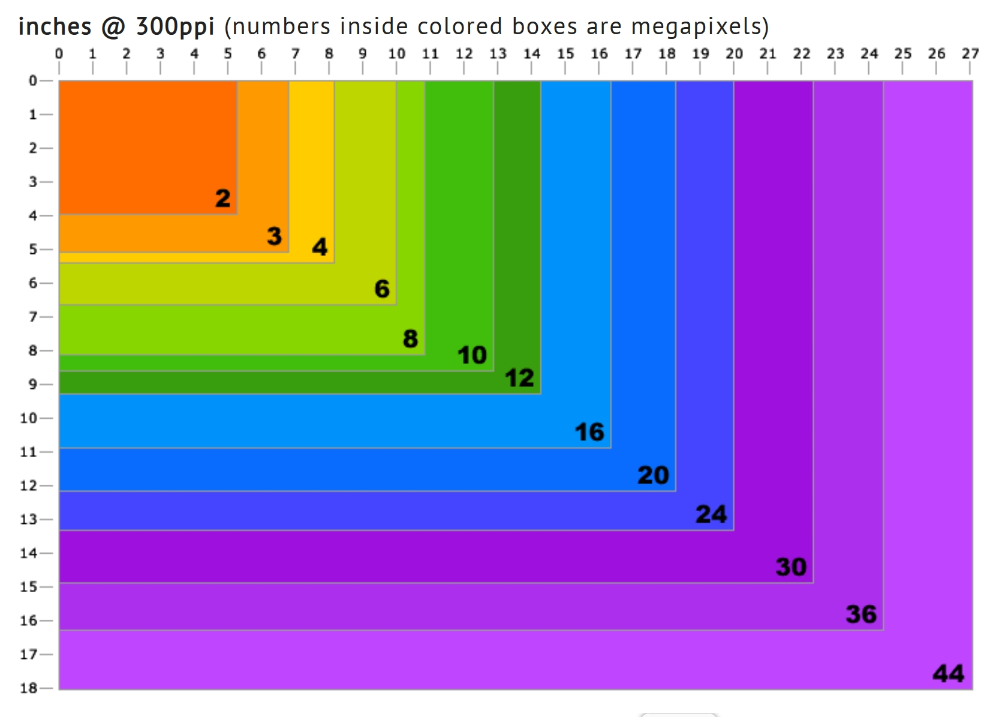
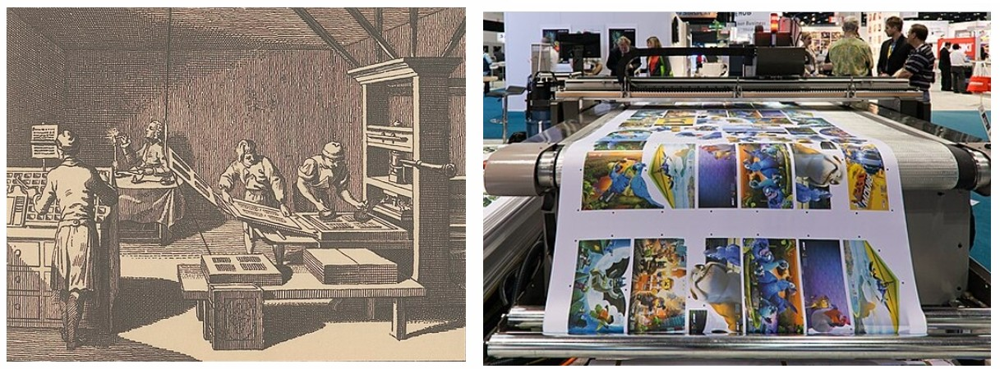
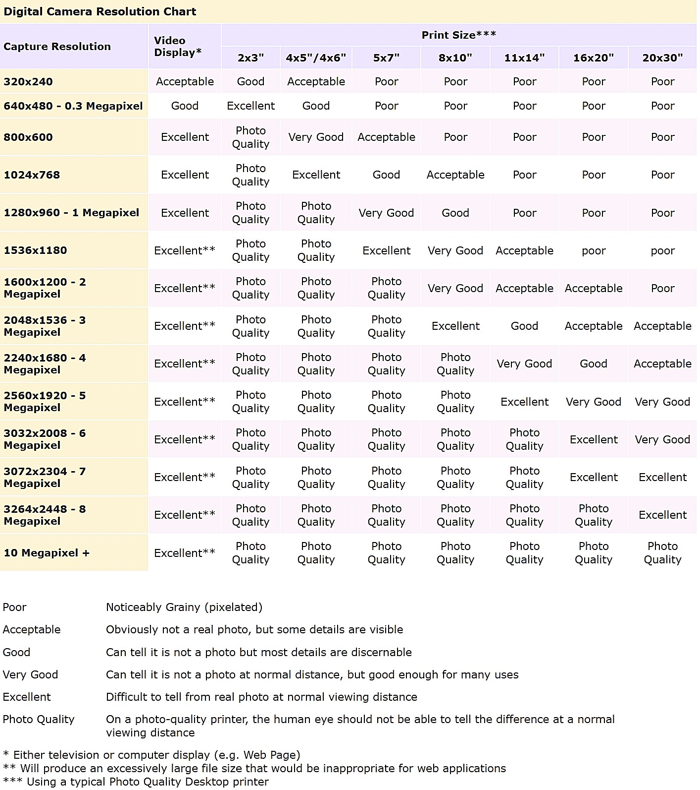

프린터나 일반 문서를 출력하는 일반프린터와 사진 출력용인 포토프린터 로 나눌 수 있다. 포토프린터는 다시 사용하는 염료에 따라 잉크젯, 레이저, 염료승화 방식으로 구분된다. 포토프린터는 모두 사진 출력용 염료와 전용용지를 사용해야 한다.
프린터의 색공간 설정프린팅에서 가장 중요한 일은 색공간을 설정하는 것이다. 애써 보정한 사진의 색상이 다르게 프린팅되었다면 안타까운 일일 것이다. 프린트를 하기 전에 카메라, 모니터, 프린터의 색공간을 동일하게 하는 것이다. 예를 들어 카메라는 Adobe RGB이면 다른 곳도 같은 색공간으로 해야 한다. 이렇게 하지 않고 프린터의 색공간을 sRGB로 한다면 일부 색이 다른 색으로 대치되어 프린트될 것이다.
라이트룸의 [Pint]모듈에 있는 [Print Job]패널의 [Color Management]섹션은 프린터의 색공간 프로필을 설정할 수 있는 [Profile]옵션이 있다. 프린터 색공간을 추가하려면 [Print Job]패널의 [Color Management]섹션의 [Profile]에서 [Other]을 선택한다. 다음 그림과 같은 [Choose Profile] 대화상자에서 사용자 시스템에 설치된 색공간 프로필 목록을 보여 준다. 이 목록에서 사용할 색공간 프로필을 선택하면 된다.
인쇄될 사진 미리보기라이트룸 4부터는 프린팅할 사진을 모니터로 미리 볼 수 있는 소프트 프루핑(Soft Proofing) 기능을 지원한다. 이 기능을 이용하면 설정한 색공간에 맞춰 프린팅된 결과를 미리 확인할 수 있다. [Develop]모듈에서 이미지 하단의 [Soft Proofing]옵션을 누르면 이미지 표시영역의 배경이 흰색으로 바뀌고 [Histogram]패널이 [Soft Proofing]패널로 변경된다. 이 모드는 설정한 색공간 프로필 영역을 벗어나는 색을 모니터와 프린터로 구별해 표시해 준다. 예를 들어 Adobe RGB 이상의 색공간으로 촬영된 사진은 sRGB 모니터와 다른 색공간을 사용하는 프린터에서 예를 들어 Adobe RGB 색공간을 가진 사진을 [Soft Proofing]패널에서 프로필을 Adobe RGB 로 바꿔 보면 파란색은 모니터가 표시할 수 없는 색이며, 빨간색은 프린터로 렌더링 할 수 없는 부분을 표시하고 있다.
프린터의 렌더링 방식 선택프린트 시 색공간 외에 중요한 부분은 렌더링 방식(Intent)이다. 프린터에서 표현할 수 있는 색공간이 디지털 사진의 색공간보다 작은 경우 사진의 색을 그대로 재현할 수 없게 된다. 이런 경우 프린터의 색공간 영역을 벗어나는 부분을 보완하기 위해 다음 두 가지 방법을 사용한다. 첫째는 Perceptual 방식으로, 프린터의 색공간을 렌더링 과정을 통해 재현되며, 이 방법은 프린터의 색공간을 벗어난 색이 많이 있는 사진에 적합하다. 즉, 많은 색을 포함하고 있는 컬러 이미지에 사용한다. 두 번째는 Relative방식으로, 프린터 색공간 밖의 색만 렌더링을 통해 프린터 가능한 색으로 변환한다. 이 방법은 프린터 색공간을 벗어난 색이 적은 사진에 적합하다.
프린팅 해상도디지털 사진의 프린팅은 이미지가 포함된 웹문서를 프린팅하는 것과는 차원이 다르다. 웹문서에 포함된 이미지는 모니터 화면에 맞게 최적화 되어 있고, 대부분 72PPI(Pixel Per Inch)의 해상도를 가진다. 따라서 웹문서를 300DPI(Dots Per Inch)의 프린터로 인쇄하면 이미지의 크기가 작아져야 하는데 대부분 같은 크기로 인쇄된다. 이는 모자라는 픽셀을 임의로 만들어 프린팅했다는 말이다. 그 결과 이미지의 화질과 색이 모니터 화면으로 본 것과는 차이가 나게 된다.
마찬가지로, 디지털 사진도 모니터 화면에 꽉 채워졌다 하더라도 그 크기가 그대로 프린팅되는 것은 아니다. 따라서 프린팅을 할 수 있는 해상도에 맞춘 최적의 이미지 크기를 찾아야 한다. 그렇게 하기 위해서는 프린터의 출력해상도를 알아야 한다. 대부분의 도트 프린터는 300PPI 이상을 지원하며, 이 해상도는 실제 인화한 사진의 화질과 유사하다.
다음 그림은 300PPI 프린터에서 이미지 총 화소수에 따라 출력할 수 있는 사진의 크기를 나타낸 것이다. 박스내의 숫자는 파일의 크기인 메가 픽셀을, 가로세로축의 숫자는 인쇄크기인 인치를 표시한다.
[그림 출처 http://design215.com/toolbox/megapixels.php]
PPI와 DPIPPI는 주로 화면 출력장치에서 사용하는 해상도 단위이고, DPI는 인쇄용 출력장치에서 사용되는 해상도 단위이다. PPI가 1인치에 표시되는 픽셀의 수라면 DPI는 1인치에 인쇄할 수 있는 점의 수다. 하나의 픽셀이 하나의 점으로 바뀌면 PPI와 DPI는 같겠지만 반드시 그런 것만은 아니다.
인쇄인쇄는 프린터기로 출력하는 것과는 개념이 좀 다르다. 일반적인 offset 인쇄의 경우 원색 분해된 필름판을 오프셋 기기에 장착하여 인쇄한다. 이때 필름의 해상도를 LPI(Line per Inch)라고 말한다. LPI는 인쇄기에서 세로방향의 선 간격을 나타내는 단위이다. DPI(Dot per Inch)가 높을수록 사진의 화질이 높아지듯이 LPI가 높을수록 인쇄물의 화질이 좋아진다.
보통 컬러 인쇄물은 175LPI, 마스터 인쇄물은 135LPI를 사용하며, 종이의 재질에 따라 모조계열은 150LPI, 신문은 80~100LPI, 평활도가 좋은 아트계열의 종이는 200LPI를 사용한다.
따라서 사진을 인쇄하기 전에는 인쇄방식과 종이의 재질에 따른 LPI가 우선 정해져야 한다. 그 다음으로 LPI에 따른 사진의 출력 해상도인 DPI를 결정한다. DPI는 보통 LPI의 2배 수준으로 정하는데 모조지에 인쇄한다면 300DPI, 아트계열 종이에 인쇄한다면 400DPI 이상도 사용할 수 있다. 인쇄물 출력용 프로그램인 Quark나 Indesign 같은 DPT(Desk Top Publishing) 프로그램에서 사용하는 사진의 LPI는 전적으로 종이의 재질에 따라 결정된다.
인화필름을 사용한 인화는 네거티브 필름에 빛을 쏘여 인화지를 감광하는 방식으로 이루어진다. 그렇다면 필름을 사용하지 않는 디지털사진은 어떻게 인화하는가?
디지털 사진은 디지털인화기가 처리한다. 디지털인화기는 집에서 사용하는 프린터기와 유사하다. 다만 프린터기는 잉크 같은 염료를 사용하여 종이에 색을 입히는 것인 데 반해, 디지털인화기는 인화지에 빛을 쏘여 사진을 인화한다. 디지털인화 방식은 전통적인 아날로그 방식을 사용하되 그 처리과정이 프린터처럼 자동으로 진행된다는 것이 다를 뿐이다.
digital printer 출처 : https://en.wikipedia.org/wiki/Digital_printing
디지털인화에는 해상도가 중요하다. 일정한 크기의 사진을 얻으려면 최소한의 해상도가 보장되어야 한다. 다음은 사진 크기에 따른 프린트 사이즈를 나타낸 도표이다 .
출처 : http://www.bhphotovideo.com/FrameWork/charts/resolutionChartPopup.html
reference
[1]프로페셔널 사진의 조건/라이트룸5, 백종수, 이지스퍼블리싱, 2013.11.14.
[2]http://design215.com/toolbox/megapixels.php
[3]https://en.wikipedia.org/wiki/Digital_printing
[4]http://www.bhphotovideo.com/FrameWork/charts/resolutionChartPopup.html
....
....
....
....
....
....
....